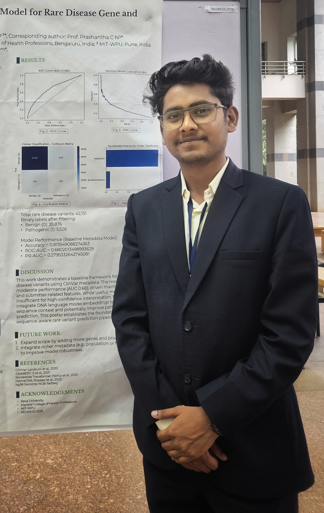

01
Computational genomics
Genomic sequence, variation, transcriptomics, biological information and the computational analysis of genome-scale data.
Bioinformatics · Computational Biology
MSc Bioinformatics student at REVA University. I work across genomics, machine learning and biological data, with a growing interest in what computational models can actually tell us about biology.
Explore my work ↓
01 / About
I started out studying genetics, microbiology and biochemistry, and my move towards bioinformatics happened gradually. I found myself increasingly interested in what happened when I could take biological data, work with it computationally, find patterns and test questions for myself.
That is still a large part of what I enjoy about research. I like following an unexpected result, writing code to test an idea, or building a workflow that makes a biological question easier to investigate.
Right now, I am moving towards computational biology around genomics and machine learning. I am especially interested in what computational results actually mean biologically, but I also like having room to follow different questions and see where they lead.
02 / Research
My interests are fairly broad, but most of the questions I keep returning to involve understanding what we can learn from biological data, and how far computational models can take us in doing that.
Genomic sequence, variation, transcriptomics, biological information and the computational analysis of genome-scale data.
Foundation models, representation learning and deep learning, with an interest in understanding what biological models learn rather than treating prediction alone as the endpoint.
Proteins, microbial systems, disease and computational questions where different kinds of evidence need to be brought together to make biological sense of a result.
03 / Projects
I looked at how entropy and superinformation vary across genomic features and seven model organisms, asking whether characteristic sequence blocks reveal structure that differs across feature types.
A benchmark of biological foundation models for representing LGMD-associated SNVs, using six models and four downstream classifiers across 6,962 variants from 10 genes. One protein foundation model is included as a cross-domain comparator.
I built a deep learning framework for poorly characterized bacterial proteins, then followed its predictions with explainability, structural analysis and functional evidence.
Project review ongoing.
The first phase used three water samples collected upstream, midstream and downstream along the Godavari River in Nashik, Maharashtra, generating original 16S rRNA amplicon data. Taxonomic profiling and PICRUSt2-inferred functional profiles were used to examine environmental-stress and pollutant-associated signatures.
Expanding to riverbed soil, plants and fish gut microbiomes.
04 / Workflow & Pipelines
A Nextflow workflow for RNA-seq preprocessing, alignment, quantification and downstream analysis, with optional fusion-detection and novel-transcript branches.
A reproducible enrichment workflow that accepts either raw gene counts or an already ranked gene list.
A human short-read WGS workflow for germline and matched tumor-normal analysis, with multiple callers, benchmarking, concordance, SV/CNV analysis, annotation and integrated reporting.
Human mitochondrial genome analysis
A reproducible short-read workflow for human mitochondrial genome analysis, incorporating circular-coordinate handling, heteroplasmy calling, NUMT-aware evaluation, haplogroup assignment, contamination assessment, annotation and integrated QC.
05 / Publications & Research Output
Publication
Manuscripts in preparation /or review
Poster presentations
Genomics India Conference 2025 · IISc Bangalore
REDRESS 2025 · Tata Institute of Genetics & Society
06 / Other Work
Small tools, experiments and ideas I build around things I find interesting.
DNAFreak really just came from me enjoying the weird side of biology. I wanted somewhere I could type in whatever I was curious about and see what strange connection came out of it. I am still having fun with it, so I will probably keep adding new things as I go.
Visit DNAFreak ↗07 / Academic Journey
AIMS Institutes · Bangalore University
Where it started. A broad grounding in genetics, microbiology and biochemistry, and where my interest in biology really began.
Stanford Engineering · Entrepreneurship & Product Innovation
I learned about product thinking, innovation and building for people, and started thinking about what those ideas could look like in biotech and research. I still find myself thinking about the design principles we unknowingly use in research, and what else we could bring in to make research more human-centred.
REVA University
A move from studying biology to asking biological questions through computation. I have been learning to work with biological data, think about biology in systems, and explore where genomics, machine learning and computational biology come together.
08 / Beyond Research
Outside research, I have a soft spot for entrepreneurship and building things. I like thinking about why some ideas work, how they become useful, and everything that happens between having an idea and actually getting it into people's hands: design, economics, policy, geography, scale, distribution and all the messy parts in between.
That way of thinking sometimes finds its way back into how I approach research and scientific tools.
09 / Contact
If you want to talk about computational biology, research, workflows, or something interesting you are building, feel free to reach out.